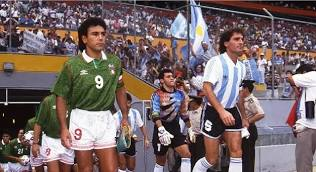
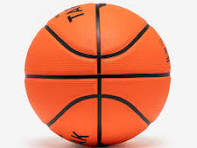

Deportes destacados
Los deportes son una excelente forma de mantenerse saludable, divertirse y desarrollar habilidades físicas. A continuación te mostramos dos de los más practicados.
Fútbol
El fútbol es el deporte más popular del mundo. Se juega entre dos equipos que intentan marcar goles pateando un balón hacia la portería contraria. Favorece el trabajo en equipo, la coordinación y la resistencia.
El fútbol puede practicarse de manera profesional o recreativa. Existen ligas locales y torneos escolares que fomentan la competencia sana.
Baloncesto
El baloncesto es un deporte dinámico que se juega entre dos equipos de cinco jugadores. El objetivo es encestar el balón en la canasta del rival, combinando velocidad, fuerza y estrategia.
Favorece la coordinación, la agilidad mental y el trabajo en equipo. Además, mejora la resistencia física y la concentración.